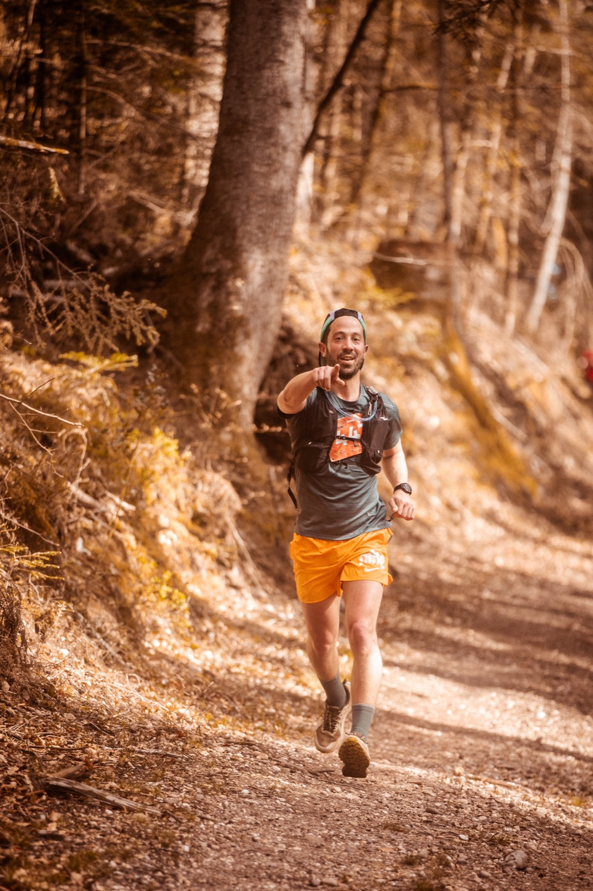

Light On Trail Pierre-Percée***
17, 37 ou 54 KM : trois façons de découvrir Pierre-Percée.
Une seule règle : en profiter.
L'essentiel
- Date
- Dimanche 4 avril 2027Dossards dès le samedi 3 avril
- Lieu
- Lac de Pierre-PercéeDépart et arrivée à Celles-sur-Plaine (Vosges)
- Distances
- 17 KM* · 37 KM** · 54 KM***530, 1250 et 1900 m D+
- Départs
- 7h30 · 8h30 · 9h30Le 54 part en premier, le 17 en dernier
- Tarifs
- 19 € · 39 € · 49 €Inscriptions ouvertes sur njuko
- Organisation
- LIGHT ON2e édition : 750 coureurs en 2026, 1 500 attendus en 2027
Les courses***
Le bord du lac, quelques vraies montées et tout le paysage. Parfait pour un premier trail ou une reprise.

Crêtes, forêts, passages techniques et 1 250 m de D+. Le format pour ceux qui aiment quand ça grimpe.

Le grand format sur les reliefs qui dominent le lac, avec 1 900 m de D+. Départ 7h30 : prévoyez le café avant.

Ce qu'ils en disent.
Un super terrain de jeu ! J'ai adoré ce parcours riche en singles et en relances !
Le plus beau parcours de trail que j'ai fait, surtout la première partie jusqu'au ravitaillement.
Superbe cadre ! Dommage de devoir courir et de ne pas pouvoir prendre de photos :)
Super organisation et super parcours en pleine forêt vosgienne et aux abords du lac. Super ambiance sur le site et sur les ravitos.
Très belle course, cadre très agréable, bénévoles au top, organisation extra ! Je reviendrai l'année prochaine avec grand plaisir !
Glissez pour lire la suite
Ce sont leurs mots, pas les nôtres. Les prochains, c'est vous qui les écrirez.
S'inscrireLe goût de l'effort, grandeur nature.
L'un des plus grands lacs de Lorraine, la forêt vosgienne tout autour et le Village LIGHT ON à Celles-sur-Plaine pour le départ et l'arrivée.
La course, et tout ce qu'il y a autour.
Dossards la veille, courses le dimanche, Village LIGHT ON ouvert tout le week-end. Les supporters sont les bienvenus (leurs encouragements aussi).
Le programme
Samedi 3 avril, retrait des dossards. Dimanche 4 avril, départs à 7h30, 8h30 et 9h30, podiums à midi.
Le Village LIGHT ON
Départ, arrivée, ravitaillement final, stands et buvette : tout se passe au même endroit.
Préparer sa venue
Accès, hébergements, matériel, FAQ : l'essentiel avant le départ.
Retour sur 2026.
750 coureurs sur le 17 KM* et le 37 KM**. Voilà à quoi ça ressemblait.


Quoi de neuf ?
Les inscriptions sont ouvertes
Le 17 KM*, le 37 KM** et le 54 KM*** vous attendent. Les dossards sont limités : ne traînez pas trop.
Cap sur l'édition 2027
Rendez-vous le dimanche 4 avril 2027 au bord du lac, avec le Village LIGHT ON ouvert dès le samedi.
Rejoindre le LIGHT ON Crew
Ravitaillements, balisage, Village LIGHT ON : sans bénévoles, pas de course. L'appel pour 2027 arrive bientôt dans la newsletter et sur nos réseaux.

On se voit sur la ligne de départ ?
Choisissez votre distance. Balisage, ravitos, bénévoles : on prépare le terrain.
soutiennent